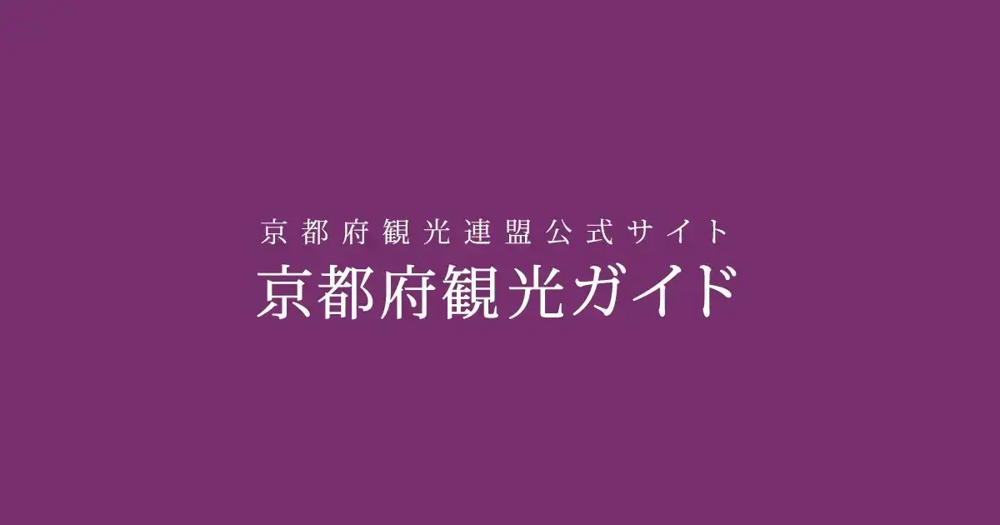
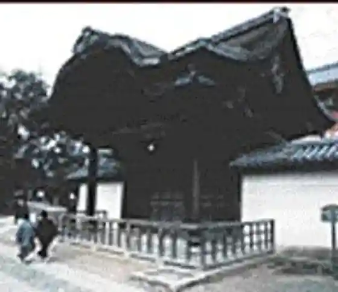
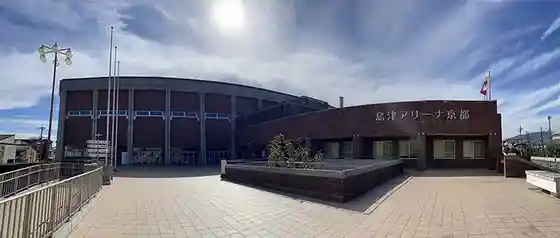

Kyoto
Kyoto · Kyoto
Kyoto
Highlighted on the Kyoto map.

Sights
Rokuon Tera (Kinkakuji)
Daitoku Tera

Shimazu Ariina Kyoto (Kyoto Furitsu Gym)

Shimei In
Ichi Wa (Hitomoji Ya Wa Suke)

Aburi Mochi
Wara Ten Shrine
Zuiho In
Imamiya Shrine
Genko Iori
Daitoku Tera Shojinryori (Daitoku Tera Kazuhisa)
Shinme Do
Daisen In
Heiya Shrine
Koto In
Kamigamo Tezu Kuri City
Seiden Tera
Kyapitaru Toyo Tei Main Shop
Kamowakeikazuchi Shrine (Kamigamo Shrine)
O Suguki Tokoro Kyoto Nari Ta
Omori Resort Campground
Tojiin
Omiya Kotsu Park
Izumi Sen Daiji In Mise
Daitokujinatto
Shozan / Senshoku Kogei Kan Cha Flower Garden
Kyoto Furitsu Domoto Insho Art Museum
Josho Tera
Koetsu Chake
Garasha / Gurasusutajio Kita Yama
Omote Senke Kitayama Hall
Chokyu Do
Takashi Ryoan
Murasakino Anri
Shiki Hagukumu Yado Zen Hayashi Bo
Kurutto Park Shimei Tori
Ruruson Ki Boa
Korai Art Museum
Kenkun Shrine
Umetsuji Ie House
Ritsumeikandaigaku Kokusaiheiwa Museum
Ota Shrine
Shake
Midoroike
Otani Daigaku Museum
Tori Iwa Ro
Ue Shichi Ken
Kitano Tenmangu Shrine
Nishijin
Kuginuki Jizo (Sekizo Tera)
Ichijo Modori Hashi
Kyoto Shutsu Town Chushajo
Kyoto Furitsu Bunka Geijutsu Hall
Tenjin San no City
salon de 1904
Tora Ya Ka Ryo Kyoto Ichijo Mise
Go Shrine
Nishijin Shoku Hall
Kyo no Tekizu Ri Experience
Zui Haru In
Chogoro Mochi Honpo
Adachi Kumihimo Kan
Kita Village Art Museum
Raku Art Museum
Kyoto Gosho
Sembon Enma Do (Insetsu Tera)
Niijima Kyutei
Nashiki Shrine
Koeki Zaidanhojin Teori Gijutsu Shinkozaidan Shokusei Kan
Kyo Tofu Fujino
Mankame Ro
Shokoku Tera
Shokoku Tera Joten Kaku Art Museum
Tsuruya Yoshinobu
Sasaki Shuzo
Kyo Nishijin Kotaro no Su
Jisho In
Sho Yado Nunoya
Honpo Tera
Sado Museum Kyo Iori Bunko
Kin Tame
Hokyo Tera (Ningyo no Tera)
Nishijin Kurashi no Art Museum Tomita Ya
Kyo Kashi Museum
TAKENOKO Yugengaisha Yokoyama Chikuzai Mise
Kyoto Koko Museum
Kyoto History Museum
Rozan Tera
Kyo Ya no O Hiru Amami Tokoro Shi Ji Ma
Kokutei Historic Site (Raizan Yo Shosai Sanshi Suimei Tokoro)
Daishogun Yagami Sha Ho Toku Dono
Sawai Shoyu Main Shop
Choka Shashinkan (Genzai, Kyukanchu)
Kyo Nishijin Kasho Shu Zen
Sembon Tama Hisashi Ken
Kurutto Park Gosho Higashi
Myorenji
Ka Yu Chaya
Yamada Matsuka Ki Mise
Gosho Nishi Aizen Nishi Village Kyodai Kimo no Mise
Kyoto Furitsu Fumin Horu (Arutei)
Masu Tomi Chigaku Hall
Gyararii Murasaki Shoku Iori
Somei
Ten City
Yuzuki Kyo Mise
Harisu Rikagaku Kan Doshisha Gyararii
ama
Okazaki Koen Chushajo
Jisho Tera (Ginkakuji)
Kyoto Ginkakuji Kanko Chushajo
Kifune Shrine
Takaragaike Park
Oku no In Mao Dono
Sanzen'in
Kyoto Yagaikatsudo Shisetsu (Hanase Yama no Ie)
Eikan Do (Zenrin Tera)
Kyoto Budo Center
Renge Tera
Hanase
Kamo O So Shrine (Shimogamo Shrine)
Hyakumamben San no Tezu Kuri City
Tenju Iori
Kyoto Furitsu Botanical Garden
Kyoto Zoo
Kyoto Furitsu Library
Konchiin
Kurama Tera
Kyoto Shukuhakujo Shirakawa In
Heian Shrine
Shisen Do (Jozan Tera)
Honen In
Omoto Sannan Zendera
Shinnyo Do (Shinsei Gokuraku Tera)
Nanzen In
Konkai Komyo Tera
Tanuki Taniyama Fudo In
Fujii Saisei Kai Yurin Kan
Entsu Tera
Shugakuin Rikyu
Enkoji
Unmo Shi Shinise (Ho Node)
Jakko In
Kyoto Dento Sangyo Museum
Kyoto Konsatohoru
Murin Iori
Hyotei
Kyoto Kyosera Art Museum (Kyoto Art Museum)
Tsuchii Kokorozashi Ba Shi Honpo (Kokorozashi Ba Shi Village)
Takaragaike Koen Undo Shisetsu
Garden Museum Hiei
Yoshida Shrine
Kyoto National Kindai Art Museum
Shogoin Hachi Tsu Hashi So Main Shop
Kyoto Furitsu Tohan Meiga no Niwa
Takaragaike Park Kodomo no Rakuen
Kyoto Daigaku Sogo Museum
AYANOKOJI Okazaki Main Shop
Jisso Inmon Ato
Hosen In
Kyoto Kanze Hall / no Kyogen
Tetsugaku no Michi
Ichijoji Kudari Matsu
Amida Tera (Ko Chi Tani)
Kyoto Furitsu Kyoto Gaku Reki Sai Kan
Kinpuku Tera
Ohara Kanko Hosho Kai
Kano Takumi Juan Kyoto Chashitsu to
Shimogamo Charyo
Ohara Workshop
Roku Jo
Joren Hana In
Manshuin
Shogoin
Biwako Sosui Memorial Museum
Kyu no Mori
Inku Line
Kyo Tsukemo no Taian
Seri Nama
Kumano Wakaoji Shrine
Muge Hikari In
Ryokan Yachiyo
Anraku Tera
Chashitsu Ko Kaori Iori Cha no Yu Experience
kokoka Kyoto Kokusaikoryu Hall
Biwako Sosui
Sen'oku Hakko Kan (Sumitomo Korekushon)
Kyoto Tokuriki Hanga Kan
Shorin In
Sanemitsu In
Kyo Kashi Koshi Kurabu
Omen
Take Shigeru Ro
Raigo In
Hosomi Art Museum
Myo En Tera Matsugasaki Daikoku Ten
Kuni Shitei Shiseki Iwakura Tomomi Yusei Kyutaku
Komaru Ya Sumii Fukakusa Uchiwa Kyo Maru Uchiwa
Honen In Mori no Center
Hanase Resort Yama Village Miyako City Koryu Forest
Nanzenji Junsho
Yasumoto Baikupuru / Rentasaikuru
Nanzen Hall
Akayama Zen'in
Yuki Shrine
Hiroya
no Village Art Museum
Ohara Onsen
Myo Man Tera
Kyo no Tori Dokoro Yaoki Iori Main Shop
Kyoto Geijutsu Daigaku Geijutsu Kan
Kuramayama Reiho Dono
Sato no Eki Ohara
Miyake Hachiman Shrine
Watanabe Shoten
Gombe Kitayama Mise
Kyoto Mingei Museum
Oharame Ni Henshin Kitsuke Experience
Motoshiro
Yama Bana Heihachi Chaya
Kai Sei Tei Kitayama Main Shop
Kawashima Orimono Bunka Kan
Atozon Kaguraoka
Kyoto Kogeisen'idai Gaku Bijutsu Kogei Museum
Otonashi Shi Falls
Oike Chikachushajo
Moto Rikyu Nijo Shiro
Ponto Town
Shijo Kawara Town
Mibu Tera
Mibu Onsen Hana Baths
Honnoji
Taikyoku Dono Honpo Rokkaku Mise Amami Tokoro (Sei Sono)
Nijo Shiro Chushajo
Hachi Chikuan
Shinsen Kumi Mibu Tonsho Iseki (Yagi Ie)
Rokkaku Do (Shiun Sancho Ho Tera)
Kyoto Kokusai Manga Museum
O Yado Ishicho
Nishiki Tenmangu Shrine
Kamiizumi En (Shingonshu Jiin)
Esu Hotel Kyoto
Kyoto Mangekyo Museum
Ponto Town Kabu Ren Ba
Takase Kawa (Kazuyuki Fune Nyu Ato)
Hotel Montore Kyoto
Ogawa Ie House (Nijo Camp Office)
Zen Tokoro Kan Potchiri
Nishiki Market
Sanjo Bridge
Kyoto Bunka Museum
Kyo Yuzen Taiken Kobo Maru Masu Nishi Village Ya
Izutsu Hachi Tsu Hashimoto Ho Kyogoku Ichiban Machi - Minami Nishikikoji -
Ishi Nagamatsu Kiku Sono
Ponto Town Izumoya
Kyo Ryori Ume Mura
Za Roiyaru Park Hotel Kyoto Sanjo
Oe Nogakudo / no Kyogen
I no Dakohi Main Shop
Mibu Tera Rekishi Shiryoshitsu
Manzara Tei NISHIKI
o mo ya Todo In
Madamu Koran
Koten no Nikki Nen Kyoto Heiankyo Sosei Kan
Kyoto Dentokogei Kan
Sabo Maeda
Za Roiyaru Park Hotel Aikonikku Kyoto
Kyo Kashi Tsukasa Yoshi Ko
FORTUNE GARDEN Kyoto
Mokushii Kyoto
Moto Rikyu Nijo Shiro Tokubetsu Meisho Ni no Maru Garden
Shinkyo Kyoku
Kinzoku Kogei Workshop Chikuei Do
Kyo Aruki Kyoto Shijo Main Shop
Sumibi Yakitori Kushi Kura Main Shop
Gyarariimaronie
Kaiseki Kin Mata
Maruta Town Juni Dan Ie
Zahen no Kotto Ki Ichiri
Kyoto Wa Kasaya Tsuji Kura
Kaori Shinise Shoei Do Kunju Kan
Kyoto Tsuruya Tsuruju Iori
Maeda Kohii Shitsu Town Main Shop
Ryori Ryokan Tenpura Yoshikawa
Atokonpurekkusu 1928
Kikyo Sushi
Kyoto Benri Do Main Shop
Eiraku Ya Main Shop
Kyoto Shibori Kogei Kan
omo café
Kyo Uchiwa Aiba
Menami
Viain Kyoto Shijo Shitsu Town
Tan Kuma Kita Mise
Goryo Mizu
Hyakusoku Ya Main Shop
Kaori Shinise Shoei Do Kyoto Main Shop
Mishima Tei
Za Roiyaru Park Kyambasu Kyoto Nijo
Wakuwaku Kan (Wakkujapan)
Sekandohausu Todo In Mise
Shimazu Seisakusho Sogyo Kinen Museum
Kuromame Cha Iori Kitao Nishiki Mise
Kurochiku Tensho Kan
Hasegawa Shoju Do
Honke Fune Hashiya
Honke Jube
Matsu Ya
Kaori Shinise Hayashi Ryu Noboru Do
Hato Plaza KYOTO Sanjo
Kurafuto Yamamura
Hana Yu Koji Edogawa
Manzara Main Shop
Ikebana Museum
Tsuzumi Gatsu Shijokarasuma Mise
Maeda Kohii Meirin Mise
Furenchiresutoran Shiemoa
Kai Iori Kado Ya
Maeda Kohii Fumihiro Mise
Eiraku Ya Shitsu Town Mise
Kikko Ya
Chuka Na Ie Ippin Kaori
Kizakura Sho Kaze Ro
Flower Garden Daigaku History Museum
Suzuki Ichi Senshoku Korekushon
Sanjusangendo
Kyoto Maruyama Chushajo
Yasaka no to (Ho Kan Tera)
Gion
Gojo Bridge
Kiyomizudera
Kasagi Ya
Sannei Saka
Choraku Kan
Yasaka Shrine
Kyoto Shimizu Saka Kanko Chushajo
Jinushi Shrine (Shaden Shufuku Kojichu no Tame Heimon Shiteimasu)
Otowa Falls
Kennin Tera
Hoko Tera
Yo Gen In
Komyo In
Toyokuni Shrine
Gion Kobu Kabu Ren Ba
Chishaku In Hall
Takadai Tera
Chishaku In
So Honke Yudofu Oku Tan Shimizu
Bakumatsu Ishin Museum (Ryosen Rekishikan)
Kyo Tsukemo no Nishida Ya
Kyoto Oto Chushajo
Rokuhara Mitsu Tera
Nihondento Bunka Nyumon Koen Gionkona / Kyomai Nado
Nanajo Kan Haru Do Katsu Za Kissa
Ishibei Koji
Kawai Kanjiro Memorial Museum
Chion'in
Shichimi Kahon Ho
Sennyu Tera
Myoho Inmon Ato
Uesutein Miyako Hotel Kyoto
Minami Za
Kagi Zenryo Bo Main Shop
Ninen Saka
Ima Kumano Kan'onji
Koyasu to
Shoren Inmon Ato
Maruyama Park
Kanken Kanji Museum Library (Kanji Museum)
Charyo Miyakoji Sato Gion Main Shop
Unryu In
Ryosen Kannon
Gion Kagai Geijutsu Museum
Omoto Santo Fuku Tera
Toyokuni Jinja Takaramono Kan
Giwon Komori
Imai Han Nenju Mise
Issen Yoshoku no Mise
Rikudo Chinko Tera
Shimizu Koji Saka no Hotel Kyoto
Kan Haru Do Higashi Mise
Kyoto Ryosen Gokoku Shrine
Takadai Tera Ichinen Saka Kanami Tsuji
Kyoto National Museum
Ebisu Shrine
Gion no Ugan Mizu
THE SODOH HIGASHIYAMA KYOTO
Warajiya
Soba Kashi Tokoro Sawasho Soba Charyo
Kyoto Kimono Rentaru Wagaku
Hoju Tera
Kyoto Higashiyama So
Nani Hitsu Kan Kyoto Gendai Art Museum
Kyoto Gion Ranpu Art Museum
Resutorankiefu
Kikunoi Main Shop
Fun Da In (Sesshu Tera)
Gi Won Shinmon So
AYANOKOJI Gion Mise
Bubu Ie
Takadai Tera Ikkyu Iori
Hambe Fu
Izu
Kyo Aruki Kyoto Gion Mise
Kyo Ryori Doraku
Rokuhara Mitsu Tera Reiwa Kan (Bunkazai Shuzo Ko)
Shimizu Sannen Saka Art Museum
Soku Sei In
Imobo Heiya Kahon Ie
Kawakatsu So Honke Shimizu Sando Mise
Mori Toki Kan
Kyoyaki to An
Namikawa Yasuyuki Shippo Memorial Museum
Konpira Ema Kan (Kyukanchu)
Ari Ki Ya Shimizu Yoshiharu Iori
Garasu no Heya (Kyukanchu)
Kyoto Wa Kokoro Kan (Wa Kokoro Kan) (Fukube) (Hisago)
Sukorupione Gion
Hiden In
Yagembori Hanami Koji Mise
Ogi Ya Han Gesho
Reiun In
Kyoto Kimono Rentaru Rika Wafuku
Ten E In
Takadai Tera (Tenohira Art Museum)
Kita Za Giwon Omoi De Museum
Kan Haru Do Main Shop
Shiro Wan Take Kai Ro
Rakuto Iho Kan
Gombe
Ho Ho Kaori Kimono Rentaru
Kyoto Kokusai Kogei Center WAZAGU
Tenjiku Kanton Kurabu
Godai Do Do Ju In
Bishamon Do
Sosui Park
Shimizu Yaki no Sato Hall
Zui Kokoro In
Kajuji
Tenji Tenno Ryo
Kawasakidaishi Kyoto Betsuin Kasahara Tera
Rakuto Takushii
Kyo no Inaka Mingu Museum
Itto Sono Museum (Kaori Kura In)
Umekoji Park Omoiyari Chushajo
JR Kyoto Eki Shinkansen Hachijoguchi Deribariisabisu
Crosta Kyoto (Nimotsu Azuka Ri Tokoro Kyariisabisu)
Kyoto Aquarium
Umekoji Park Ogata Basu Chushajo
Okoshi Basu (Kyoto Teikikanko Basu)
Honganji (Nishimoto Gan Tera)
Kyoto Sogo Tourist Information Kyo Nabi
COCON KARASUMA Kokon Karasuma
Kyoto Ekibiru Infomeshon
Nidekku Kyoto Tawa
Umekoji Park
Higashimoto Gan Tera (Shinshu Hon Byo)
Shosei Sono (Karatachi Tei)
Umekoji Koen Tezu Kuri City
Kyoto Tetsudo Museum
Za Roiyaru Park Hotel Kyoto Umekoji
Art Museum (Eki) KYOTO
Umekoji Park Nanajo Iriguchi Hiroba Jitensha Baiku Chushajo
Kyoto Senchurii Hotel
Morita Washi Wa Kami no Mise
Sumiya Motenashi no Bunka Art Museum
Kyo Yumoto Hatoya Zuiho Kaku
THE THOUSAND KYOTO
Kokorozashi Ru Sachi
Ten Yuki Manai
Kaoru Kyokudo
Sushi Iwa (Sushi Kappo Kaiseki)
SUNRISE TOURS JTB
GOOD NATURE HOTEL KYOTO
Asuka
Kawakatsu So Honke Main Shop
Wakabayashi Butsugu Seisakusho
Kyoto Gekijo
Ryukokudaigaku Omiya Kyanpasu
Fukuju Sono Kyoto Main Shop
Tori Ya San
Toka Saikan
Hotel Nikko Purinsesu Kyoto
Takesasa Do
Kyoto Tokyu Hotel
Hito Machi Koryu Kan Kyoto
Kyoto Sangyo Daigaku Gyararii
Kyo Kasho Sasaya Iori
Hotel Guranvia Kyoto
Shin Ie House
Kyoto Tawa Hotel
Kamogawa Aze Sasaki
Kyofu Kyutei Tai Ryori Hotoke Sara Kan
Miyakobashi Susu Take (Hashi) (Ichihara Heibe Shoten)
Yugengaisha Kyoto Saikuringu Tour Purojiekuto (KCTP)
Ta Goto
Sugimoto Ie House (Genzai, Oya Ne Kojichu no Tame Kokaiseigen Garu Bai Garimasu)
Kyogi Do
Chimoto
Takarashuzo
Omuronkomyuni Ga Shon Plaza
Riigaroiyaru Hotel Kyoto
Iwaisaikuru Kizu Ya Hashi Mise
Kyoto Tawa Hotel Anekkusu
JR Kyoto Eki Tetsudo Information Center
Gomyo Kinpaku Kogei
Juyon Haru Ryokan
Umekoji Park Omiya Minamiguchi Jitensha Baiku Chushajo
Kyoto Gakko History Museum
KCI Gyararii
Tanaka Cho Nara Shi Mise
Kyoto Ritsu Geijutsu Daigaku Geijutsu Museum
Kyoto Eki Hachijoguchi Chushajo
Otabe Honkan
Kyoto Terusa (Kyoto Fumin Sogo Koryu Plaza)
Kyo Gokokuji (Toji)
Hironori San no City
atelier Kyo Bamu
Kyoto Shimin Bosai Center
Kyoto Toji Kotto City
MK Haiya /MK Takushii
Kyo Yuba Yuba Ni
Okutani Kumi Shaji Kenchikuten Ji Museum
Kanchi In
Koeki Zaidanhojin Kyoto Fu Kokusai Center
Koryuji
Kyoto Arashiyama Kanko Chushajo
Atago Yama Atago Shrine
Togetsu Hashi
Atago Nembutsuji
Sagano Torokko Ressha
Uzumasa Eiga Village
Ryoan Tera
Jiorama Kyoto JAPAN (Tetsudo Museum)
Okochi Sanso Garden
Arashiyama Onsen (Eki no Ashiyu)
Uzumasa Eiga Village (Evangerion Kyoto Kichi)
Ryoan Tera (Nishi Gen In)
Omoto Yama Myoshin Tera
Torin In
Hirosawa Ike
Saga no Onsen Tenzan Baths
Rambura Rentasaikuru
Niwa Tera
Josho Ko Tera
Kyoto Utano Yusuhosuteru
Kyoto Takao Kanko Chushajo
Nishikyogoku Sogo Sports Park
Kyu Saga Gosho Omoto Yamadai Kaku Tera
Kurumazaki Shrine
Arashiyama - Takao Park Uei
Honke Sakura Mochi Kon Kiki Chaya
Arashiyama Eki Hannari Hokkori Sukuea
Nishiyama So Do
Adashi no Nembutsuji
Uzu Kyo Park
Koryuji Reiho Dono
Saga Tofu Morika
Arashi Kyo Meguri
Kyoto Arashiyama Orugoru Museum
Umemiya Taisha
Gio Tera
Burari Arashiyama
Tenryu Tera
Kijima Shrine (Tsusho Kaiko no Sha)
Tsune Jakko Tera
Naka no Shima Park
Ho Kongo In
Omoto Yama Tenryu Tera Furui Gatsu
Seiryo Tera
Myoshin Tera Taizo In
Katsura Haru In
Shingo Tera
Ni Mikoto In
Koeki Zaidanhojin Yomei Bunko
Ayu Chaya Heiya Ya
Sabo Chikurin Village
Kin to Kawa Sutendogurasu Workshop (Cheri Dezain)
Kozan Tera
Kyoto Akuariina
Auru Keihoku (Kyoto Furitsu Zeminaruhausu)
Saimyo Tera
Osawa Ike
19 Seiki Horu
Yatsu Hashi Iori Toshishuyakata
Kawakatsu So Honke Arashiyama Mise
Adashi no Mayu Village
Rakushi Sha
Seiryo Tera (Saga Shaka Do) Reiho Kan
Saga Arashiyama Bunka Kan
Tensho no Yu Daimon
Ippan Shadanhojin Arashiyama Hosho Kai
Myoshin Tera Taishu Zendo
Genko Tera
Museum Saga no Ningyo no Ie
Kan Haru Do Sagano Mise
Nishiki
Nembutsuji
Kameyama Park
Takiguchi Tera
Kyo Tsukemo no Mori Honshakojo Honsha Sanjo Mise
Kyoto Kitcho Arashiyama Main Shop
Taki Mata Taki
Rokuo In
Ayu no Yadotsu Taya
Saiin Kasuga Shrine
Getsurin Tera
Momiji Ie
Fukuda Art Museum
Busho Experience Jidaigeki no Takatsu Shokai
Roadside Station Uddeii Keihoku
Yatsu Hashi Iori
Niwa Tera Reiho Kan
Oimatsu Arashiyama Mise
Takatsu Ko Culture Hall
Rinsen Tera
Kyoto Arashiyama Arashi Domburi
Yudofu Chikusen
O Tera no Hotel Flower Garden Hall
Saga Bijutsudai Gaku Saga Bijutsu Tankidaigaku Fuzoku Museum
Yamaguni Shrine
Sensu Tsukasa Ito Tsune
Ko Umi
Shuzan Joshi
Ryotokuji (12 Gatsu no Daikon Taki Ha Tomen Chushi Tonarimasu)
Kyoto Saga Torii Hon Streetscape Hozon Kan
Chudo Tera
Nakajima Zogan
Yamaguni Tai
Hotel Binario Saga Arashiyama
Kuriyama Workshop
Haneda Shuzo Yugengaisha
Fukutoku Tera
Keihoku Fureai Asa City
Tsumunaga
Keihoku Sports Park
Sofu Tani
Hokyo In
Kamikatsura Kawa no Uotsuri Ri
Kurio Toge
Hatcho Gorge
Saiho Tera (Koke Tera)
Arashiyama Monkii Park
Senya Farm
Matsuotaisha
Katsura Rikyu
Arashiyama Onsen
Kyoto Katsura Onsen Nizaemon Baths
Suzumushi Tera (Kegon Tera)
Zen Mine Tera
Kyoto Take no Sato Onsen Manyo Baths Hotel Kyoto Eminasu
Horin Tera
Jizo In (Take Tera)
Naka Village Ken
Shoboji
Kyoto Rakusei Chikurin Park
Oharano Shrine
Shoji Tera (Hana no Tera)
Kinzo Tera
Saikuringurodo
Ju Wa Tera
Takenoko Tei
BNR Farm
Katsura Sakano Tori Yuen
Kame no I
Kyoto Kacho Kan
Matsuotaisha Kame no City
Matsuotaisha O Sake no Museum
Aoyama Ongaku Memorial Museum (Barokkuzaru)
Zen Mine Tera Monju Jiho Kan
Tahata Ranpu Kan
Fushimi Inari Taisha
Jonan Miya
Kyoto Fu Sogo Mihon City Hall (Kyoto Parusu Plaza)
Terada Ya
Kizakura Fuku Mizu Kura
Fushimi Chikara Baths
O Kaori Miya Shrine
Yokooji Sports Park
Daigo Tera
Gekkeikan Okura Memorial Museum
Fujimori Shrine
Kyoto Seishonen Kagaku Center
Matsumoto Shuzo
O Kosui
Kyosera Gyararii Kyosera Fainseramikku Kan Inamori Raiburarii
Kyoto Furitsu Fushimi Minato Park
Tori Sei Main Shop
Shinsei Kuramoto Chokubai Mise
Kitagawa Honke
Fujimori Jinja Takaramono Dono
Ishi Mine Tera
Kizakura Memorial Museum (O Sake no Museum) Kappa Museum
Kizakurakappakantorii
Kyoto Nambu Kuriin Center Kankyo Gakushu Shisetsu Sasutena Kyoto
Daigo Tera Reiho Kan
JR Inari Eki Ranpu Koya
Sakana San Ro
Fushimi Shiroato Shutsudo Ibutsu Tenjishitsu
Nogi Shrine
Sanpo In
Anraku Hisashi In
Tokutei Hieiri Katsudo Hojin Fushimi Tourism Association
Kyo Ekorojii Center (Kyoto Kankyohozen Katsudo Center)
Kyoki Shuzo
Saito Shuzo
Masuda Tokubyoe Shoten
Kurutto Park Fushimi Ima Town
Junihitoe Kinensatsuei Kan Yuki Gekka En (Iyasaka)
Kikusui Jakusui
Kinshi Masamune
Gekkeikan
Yamamoto Honke
Nogi Jinja Takaramono Kan
Oyama Honke Shuzo Kyoto Fushimiko Ba
Shinrin Sogokenkyusho Kansaishisho Mori no Tenjikan
Kyoto Kyoikudai Gaku Kyoiku Museum (Manabi no Mori Museum)